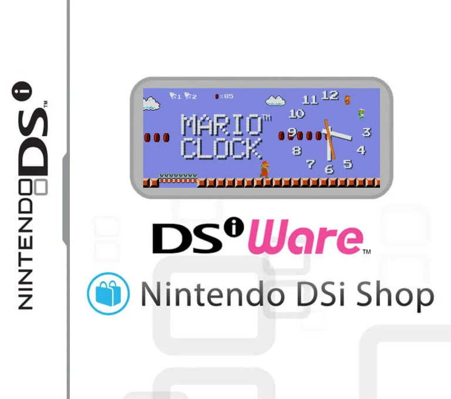
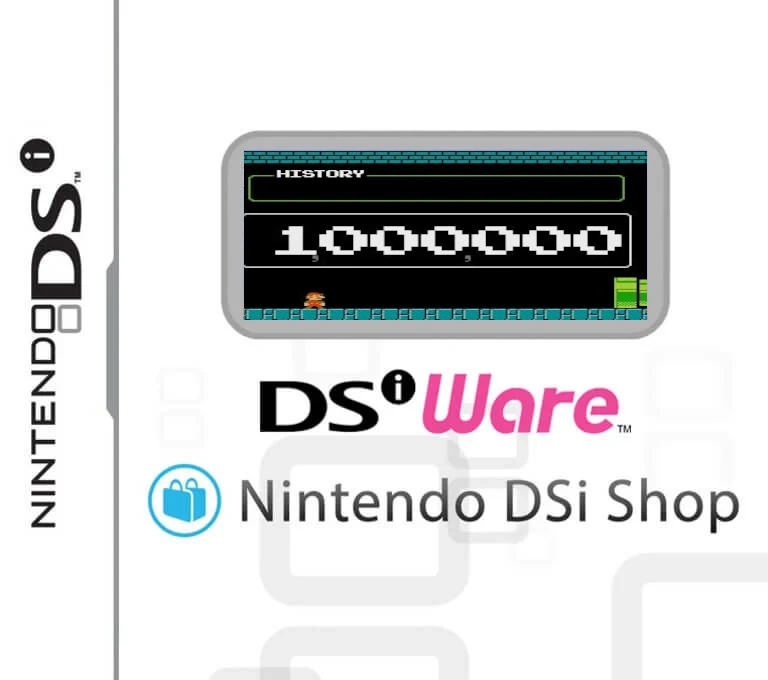

Volver a Inicio

|
Aqui encontrarás roms de la Nintendo DSi (DSiWare) |
|

|
Mario ClockNombre de archivoMario Clock (Europe, Australia / USA) (En,Fr,De,Es,It,Zh / En,Fr,Es).nds Tamaño : 2,79 mb Región : Europa y USA |

|
Mario CalculatorNombre de archivoMario Calculator (Europe, Australia / USA) (En,Fr,De,Es,It,Zh / En,Fr,Es).nds Tamaño : 1,80 mb Región : Europa y USA |